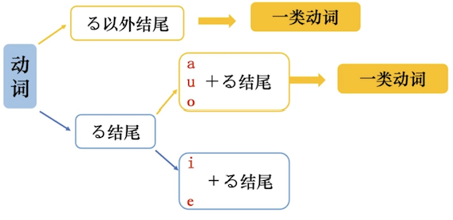
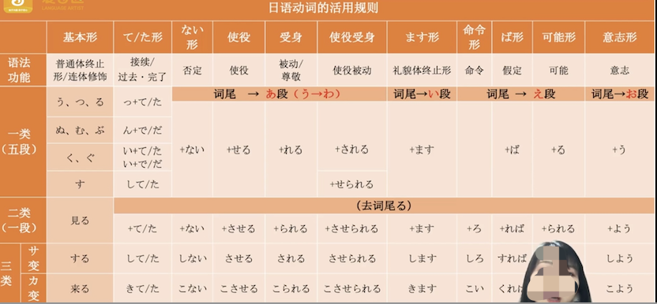

总结
| 课程 | 内容 | | --- | --- | | 4 | ます | | 14 | 基本形/て形 | | 19 | ない形 | | 20 | 基本形 | | 21 | た形 | | 29 | 命令形 | | 30 | 意志形 | | 37 | ば形 | | 38 | 可能形 | | 41 | 受身形 | | 43 | 使役/使役受身 |
一类动词，五段动词：う、つ、る、ぬ、ぶ、む、く、ぐ、す
二类动词，一段动词：词尾i段、e段 + る
三类动词：サ、カ变动词，来る、する、动作名词+する


柔（やわ）らかい — 硬（かた）い
苦（にが）い ー 甘（あま）い
冷（つめ）たい — 熱い
汚（きたな）い — 綺麗
閉（し）める ー 閉（と）じる
-
閉める（しめる）：ドア、窓、店などを物理的に閉める。
-
閉じる（とじる）：本、目、傘など、開いているものを閉じる。
-
消す（けす）：電気や音源（ラジオ、テレビ）を止める。
-
連絡：用于人与人之间的信息传递或通知，如会议时间、日程安排等。
-
送る：用于寄送信件或物品。
-
書く：用于记录在日历或笔记本上。
-
挨拶：用于打招呼或问候。